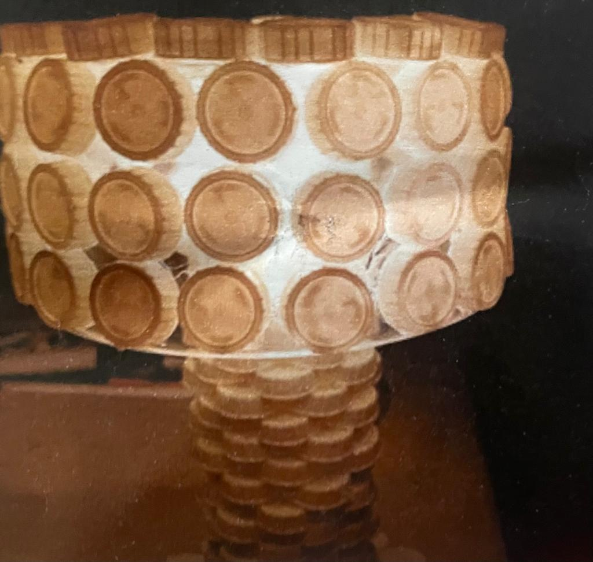
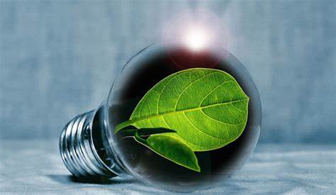

"Verde es el color principal del mundo, y a partir del cual surge su hermosura"
Eco-lamp es una lámpara elaborada a partir de productos reciclados. Su base está hecha de tapas de botellas de refresco que son recolectadas. Es un producto innovador en esta comunidad que satisface las necesidades de los consumidores al mismo tiempo que ayuda a la conservación del medio ambiente.
Funciona a través de un foco de uso ecológico el cual se conecta con la electricidad. A pesar de que su uso sea con electricidad, esta tiene un sistema ahorrador el cual hace que consuma menos energía eléctrica que otras lámparas en el mercado.
Eco-lamp contamina menos gracias a que no requiere mucha electricidad para funcionar.
Nuestro objetivo es tratar de generar conciencia ecológica en nuestros consumidores, innovar haciendo una lámpara ecológica elaborada con tapas recicladas y satisfacer las necesidades del cliente dándoles un producto ecológico de calidad.
Utilizar materiales reciclables para la elaboración de lámparas y así contribuir al cuidado del medio ambiente.
Hacer que Eco-lamp sea reconocida como una empresa líder en el mercado ecológico, garantizando capacidades profesionales en cada uno de los trabajadores.